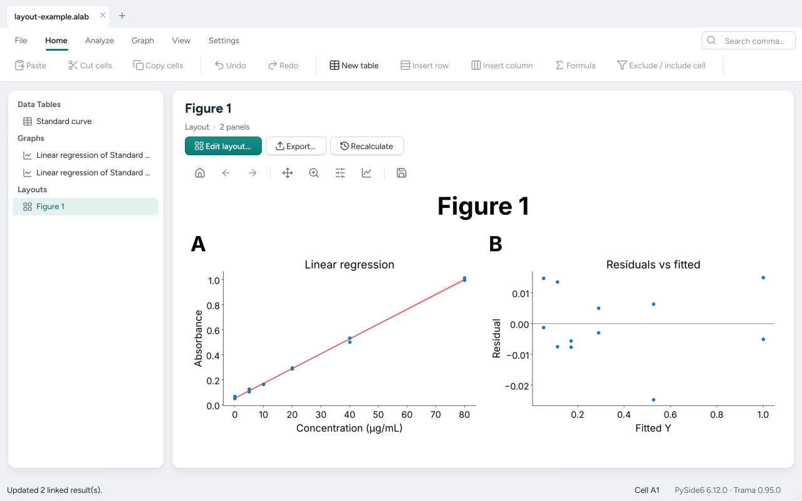
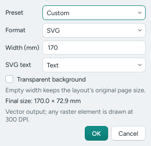
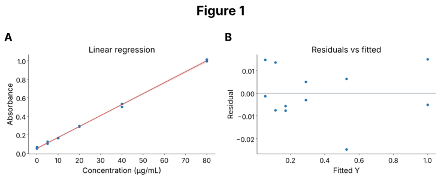
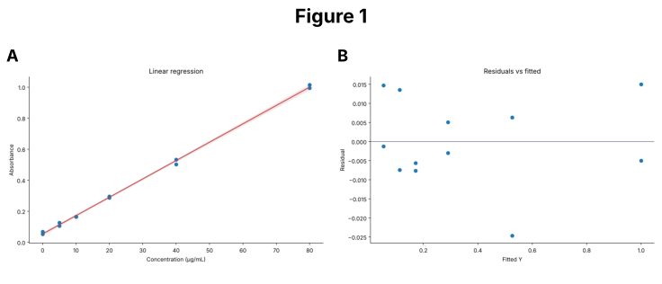

GuideGraphs and reportsVector export
Export a vector figure
The journal wants figure 1 in a vector format, 170 mm wide, with panels A and B. How do you export it from Trama so that it stays sharp at any zoom, with text that is still readable once printed?
- Checked on Trama 0.95.0 beta
- Data the synthetic standard curve
- Width 170 mm
- Reading 7 minutes
When to use it
A vector file (SVG, PDF) describes lines, points and text as geometry: it scales without losing sharpness and the text stays text. A raster file (PNG, TIFF) is a grid of pixels fixed at export time: beyond its resolution you see the steps.
- Graphs, curves, diagrams: vector. That covers almost everything that comes out of Trama.
- Photographs and microscope images: raster, at the resolution the journal asks for.
- Decide the final width first: many journals use one column (about 85 mm) or two (about 170 mm). Check the instructions for authors, which also give the minimum text size.
- Check the font size at the final width, not on screen. That is this chapter’s edge case.
The data
The synthetic standards from the Standard curve chapter: concentration and absorbance. The project contains two Linear regression graphs, the line with its confidence band and the residuals against the fitted values, and the layout Figure 1 that places them side by side as panels A and B. Both graphs already have larger font sizes set in Format Graph; the edge case explains why.


In Trama
- Open the project with File → Open… and select the layout Figure 1 in the left panel, under Layouts.
- Choose File → Export with options…. The same command is on the Graph tab.
- Set the format and width as in the table below. The Final size line immediately shows the page size: 170.0 × 72.9 mm.
- Press OK and choose the file name and folder.
- For the PDF repeat with Format = PDF. The Vector preset sets up an 85 mm PDF, that is one column.
Show the layout in the app


| Format | SVG (then PDF) |
|---|---|
| Width (mm) | 170 |
| SVG text | Text |
| Transparent background | no |
Check the file
Do not trust the extension: open the file and check that it really is vector. On the files of this example:

| SVG, Text | SVG, Paths | ||
|---|---|---|---|
| Page | 170 × 72.9 mm | 170 × 72.9 mm | 170 × 72.9 mm, 1 page |
| Text as text | 33 elements | none | yes, searchable |
| Embedded images | none | none | none |
| Size | 25.2 kB | 51.3 kB | 24.3 kB |
Text or paths. With Text the labels stay text: you can correct them in a vector editor and search for them in the file. The file names a font family, though, and on a computer that does not have it the program substitutes another, with different widths. With Paths every letter becomes a shape: the figure looks identical everywhere, but the text can no longer be edited and the file is about twice as large. Use Text while the figure is still changing, and Paths for the final version if the journal asks for fonts to be converted.
Default font sizes end up at 4 points
The same layout, with the graphs’ default font sizes, exported at 170 mm. The file is vector and sharp, but the text inside the panels is tiny: 4.0 points for tick labels and axis titles, 4.8 for the panel title. This happens because the layout scales each graph down to fit two in a row, and the 170 mm width scales the whole page down again. The layout title and the letters A and B, which sit on the page, stay at 9.6 and 11.2 points.


How to fix it. Select each graph in the layout, open Graph → Format Graph and, under Font sizes in points, increase Title, Axis titles and Tick labels. The values refer to the graph on its own: in this two-column layout at 170 mm they are multiplied by about 0.4. With 22, 20 and 18 the final text ranges from 7.2 to 8.9 points.
How to notice. Print the page at 100% or open the PDF at actual size: if the axis labels are smaller than footnote text, they are too small. The checks JSON lists the effective size of every piece of text in both cases.
What to check before submitting
- The format and width the journal asks for, and the Final size line that confirms them.
- Text size at the final width, inside the panels and not just in the title.
- Text or paths, as the instructions for authors require.
- No hidden raster images: a layout imported with panels embedded as images stays raster even in SVG and PDF, and Trama says so in the export window.
- The
.alabproject from which the figure can be exported again, if it needs changing.
Figures were prepared in Trama 0.95.0 beta and exported as vector PDF at a final width of 170 mm.
Sources
- Rougier N. P., Droettboom M., Bourne P. E. (2014). Ten simple rules for better figures. PLoS Computational Biology, 10(9), e1003833. doi:10.1371/journal.pcbi.1003833
- W3C (2011). Scalable Vector Graphics (SVG) 1.1 (Second Edition). W3C Recommendation. w3.org/TR/SVG11
- ISO 32000-2:2020. Document management — Portable document format — Part 2: PDF 2.0. International Organization for Standardization.
Checked with Trama 0.95.0 beta (tag v0.95.0, commit 4c07db6) on 20 November 2026. Export in analisi/layout_svg.py and analisi/figure_export.py.